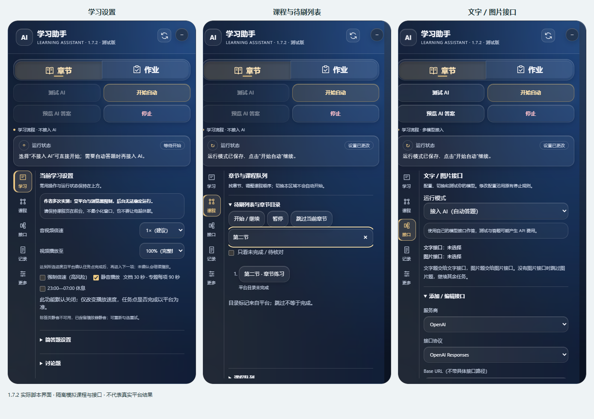
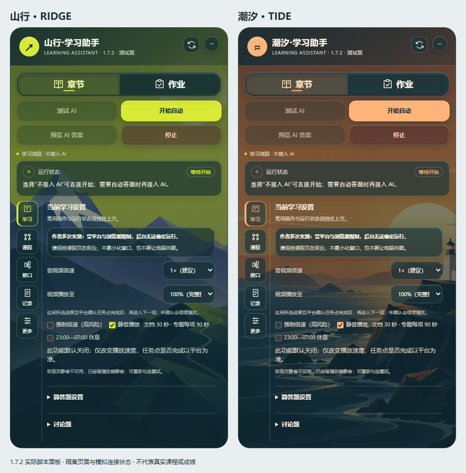
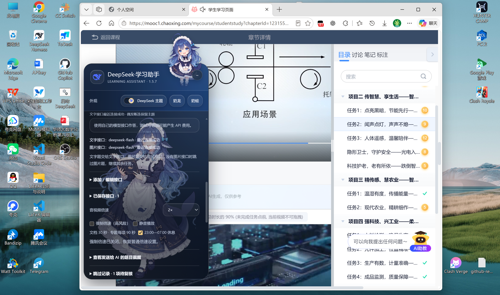

五个工作区
| 入口 | 找什么 |
|---|---|
| 学习 | 倍速、静音、夜间设置，章节或作业策略；最下方是“页面与学习设置”。 |
| 课程 | 章节搜索、未完成筛选、目录定位和课程队列。 |
| 接口 | 运行模式，文字和图片配置，已保存接口。 |
| 记录 | 答案预览、待复核项、集中补做、暂存测验返回、诊断导出。 |
| 更多 | 主题、版本检查、更新说明和反馈。 |
切换工作区只改变显示，不会开始学习或提交。开始、停止和状态保留在上方，右上角图标可检查更新。

主题怎么换
在“更多”里选择外观。山行、潮汐、默认、奶龙、奶蛙，加上九个 AI 角色主题，共 14 套。山行和潮汐不需要连接 AI，素材已内置。
文字接口测试通过后，会切到可识别的对应 AI 主题；图片接口不决定主主题。之后仍可手动切回喜欢的主题。主题出现只说明对应连接验证状态，不表示题目已经答对。

角色原设计来源及许可说明保留在主题图鉴，不代表服务商官方形象或合作关系。
标签页静音和播放器静音
勾选“静音播放”时，脚本优先尝试让当前浏览器标签页静音。油猴和浏览器支持并确认成功后，才解除播放器本身的静音；不支持、失败或超时时，保留播放器静音。
取消勾选只撤销本次脚本设置的标签页静音；原本由你手动设定的静音会保留。不会调整其他标签页或系统总音量。
修改静音不会启动媒体，也不会恢复已停止的任务。有声自动播放仍可能被浏览器限制；必要时自己点击平台播放按钮。
把课程放在独立窗口
可以把课程标签拖成独立窗口，保持课程处于选中状态，再把助手面板移到方便观察的位置。这样少切标签，也容易看到需要人工处理的提示。

不要最小化课程窗口，也不要让电脑休眠。专题阅读打开新标签时，需让阅读标签获得前台焦点才累计有效停留。完整四步图见窗口摆放说明。
收起、窄屏和减少动效
面板可以拖动和收起。页面宽度不超过 600 CSS 像素时，五区入口会自动改为横排；没有单独的手动宽窄按钮。预览网页的屏宽切换不会改变已安装脚本。
动效可在外观设置关闭，也会遵循系统的“减少动态效果”。动效反馈只是界面状态，不代表保存、提交或学习任务完成。
“页面与学习设置”里的隐藏选项默认关闭，取消勾选可恢复被隐藏元素。隐藏课程卡片不等于删除课程，也不修改任务点。